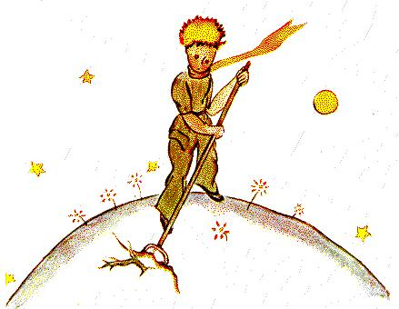

Lá in aghaidh an lae bhí mé ag foghlaim rud éigin fá dtaobh den
phláinéad, faoin dóigh arfhág sé é, faoin turasa rinne sé. Tháinig
sé amach de réira chéile, de
réir mar a thiocfadh
smaoineamh ina cheann. Sa
dóigh sin a fuair mé amach,
an triú lá, faoi eachtra na
gcrann baobab.
De thairbhe na caorach a
tharla sé an babhta seo fosta,
mar go tobann d'fhiafraigh
an prionsa beag ceist díom,
mar a bheadh amhras mór i
ndiaidh teacht air:
- Tá sé fíor, nach bhfuil, go n-itheann caoirigh toir.
- Is ea, tá sé fíor.
-Ó, is maith liom sin.
Níor thuig mé cad chuige a raibh sé chomh tábhachtach go n-
íosfadh caoirigh toir. Ach dúirt an prionsa beag arís:
- Mar sin itheann siad crainn bhaobab fosta?
Chuir mé in iúl don phrionsa beag nach toir iad na crainn
bhaobab, ach crainn atá chomh mór le heaglaisí, agus fiú dá
dtabharfadh sé tréad iomlán eilifintí leis, nach bhféadfadh an
tréad aon chrann baobab amháin a chríochnú.
An smaoineamh sin faoin tréad eilifintí, chuir sé an prionsa
beag ag gáire:
- Chaithfí iad a chur ar mhullach a chéile...
Ach ansin dúirt sé go stuama:
-Na crainn bhaobab, sula bhfásann siad, bíonn siad beag, nach
mbíonn?
- Bíonn, cinnte! Ach cad chuige ar mhaith leat go mbeadh do
chuid caorach ag ithe crainn bheaga boabab.
D'fhreagair sé mé: “Is ea! Ar ndóigh!” mar a bheadh an rud
glan soiléir. Ach bhí orm féin iarracht mhór intinne a dhéanamh
leis an fhadhb seo a thuigbhéail as mo stuaim féin.
Is é an dóigh a raibh sé, ar phláinéad an phrionsa bhig, ar nós
na bpláinéad go léir, bhí dea-lusanna agus drochlusanna ann.
Mar sin, tá dea-shíol ann ó na dea-lusanna agus drochshíol ó na
drochlusanna. Ach tá na gráinníní síl dofheicthe. Bíonn siad ina
luí ina gcodladh faoi choim na créafóige go dtí go mbuaileann an
tallann ceann acu agus go ndúisíonn sé. Searrann sé é féin ansin
agus síneann sé i dtús báire péacán beag deas gan dochar go
faiteach i dtreo na gréine. Más péacán róis nó raidíse atá ann, is
féidir ligean dó fás mar is áil leis. Ach más drochlus atá ann,
caithfear é a stoitheadh chomh luath agus a aithnítear cad é atá
ann. Anois bhí gráinníní uafásacha ar phláinéad an phrionsa
bhig...gráinníní síl bhaobab a bhí iontu. Bhí créafóg an phláinéid
ar snámh leo. Anois más baobab atá ann, agus má théann tú ina
bhun ródhéanach, ní féidir fáil réitithe leis go deo. Milleann sé an
pláinéad ar fad. Níonn sé criathar de lena chuid fréamhacha.
Agus má tá an pláinéad róbheag, agus an iomarca crann baobab
bheith ann, pléascann siad ó chéile é.
“Ceist cleachtaidh atá ann”, a dúirt an prionsa beag liom níos
déanaí. “Nuair a bhíonn tú féin nitc réitithe ar maidin, caithíídh
tú an pláinéad a réiteach go cúramach. Caithfidh tú féacháil
chuige go stoitheann tú na crainn bhaobab go rialta,chomh luath

agus a aithníonn tú iad ó na rósanna, a bhfuil siad an-chosúil leo
nuair a bhíonn siad beag óg. Obair an-tuirsiúil atá ann, ach tá sé
an-fhurasta.”
Agus lá amháin thug sé de chomhairle dom tabhairt faoi
phictiúr deas a dhéanamh a chuirfeadh an ceacht sin go maith
isteach sa chloigeann ag páistí mo bhaile dhúchais féin.
“Má théann siad ag taisteal lá éigin amach anseo,” a deir sé
liom, “d'fhéadfadh sin a leas a dhéanamh. Uaireanta ní miste do
chuid oibre a chur siar. Ach i gcás na gcrann baobab, tubaistc is
ea é i gcónaí. Is cuimhin liom pláinéad atá ar eolas agam, a raibh
leisceoir ina chónaí ann. Bhí trí thor ann agus rinne sé faillí
iontu...
Agus rinne mé pictiúr den phláinéad sin, de réir na dtreoracha
a thug an prionsa beag dom. Ní maith liom bheith ag leagan síos
rialacha. Ach tá a laghad sin eolais ar an dainséar a bhaineann le
crainn bhaobab, agus an oiread sin priacail ag bagairt ar an té a
rachadh ar strae ar astaróideach, go ndéanfaidh mé eisceacht den
uair seo amháin. Deirim: “A pháistí! Seachnaigí na crainn
bhaobab!” Is chun mo chairde a chur ar a n-aire in éadan an
dainséir sin a bhí buailte suas orthu i ngan fhios dóibh, mar bhí
orm féin,is chuige sin a chuir mé an oiread sin oibre isteach i mo
phictiúr. B'fhiú an ceacht an saothar. Fiafróidh sibh, b'fhéidir:
Cad chuige nach bhfuil pictiúr ar bith eile sa leabhar seo atá
chomh mór leis an cheann seo. Ní hansa: Thriail mé é ach níor
éirigh liom. Nuair a línigh mé na crainn bhaobab, bhí mé ar bior
le práinn.